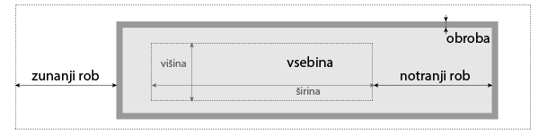

CSS Zen Garden
```css body { font-family: serif; } h1, h2 { color: maroon; font-family: sans-serif; text-align: center; margin: 1em; } ``` --- <h1 style="font-family: serif">serif</h1> <h1 style="font-family: sans-serif">sans-serif</h1> ---  --- ```html <znacka style="color: red">...</znacka>` ``` --- ```html [5] <!DOCTYPE html> <html> <head> ... <link rel="stylesheet" href="stil.css"> </head> <body> ... </body> </html> ``` --- ```html [5-9] <!DOCTYPE html> <html> <head> ... <style> body { font-family: serif; } </style> </head> <body> ... </body> </html> ``` --- HTML ```html <znacka>...</znacka> ``` CSS ```css ⟨znacka⟩ { ... } ``` --- HTML ```html <znacka id="⟨id-elementa⟩">...</znacka> ``` CSS ```css #⟨id-elementa⟩ { ... } ``` --- HTML ```html <znacka class="⟨razred⟩">...</znacka> ``` CSS ```css .⟨razred⟩ { ... } ``` --- ```html <div>...</div> <p>...<span>...</span>...</p> ``` --- ```css [1-3|5-7|9-11|13-15] ⟨izbiralec-prednika⟩ ⟨izbiralec-potomca⟩ { ... } ⟨izbiralec-starsa⟩ > ⟨izbiralec-otroka⟩ { ... } ⟨prvi-izbiralec⟩, ⟨ali-drugi-izbiralec⟩ { ... } ⟨prvi-izbiralec⟩⟨in-drugi-izbiralec⟩ { ... } ```